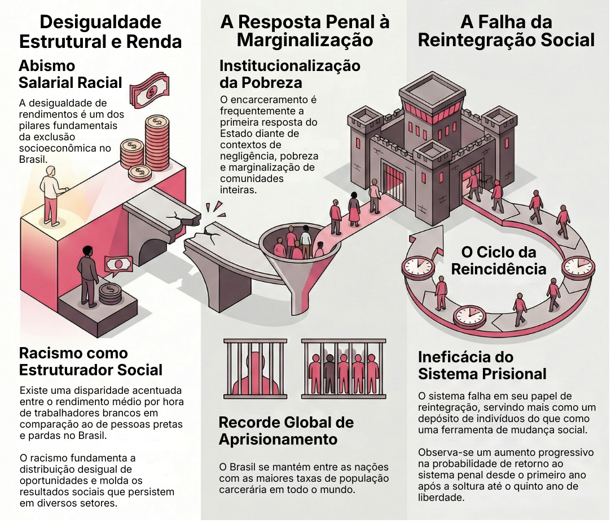
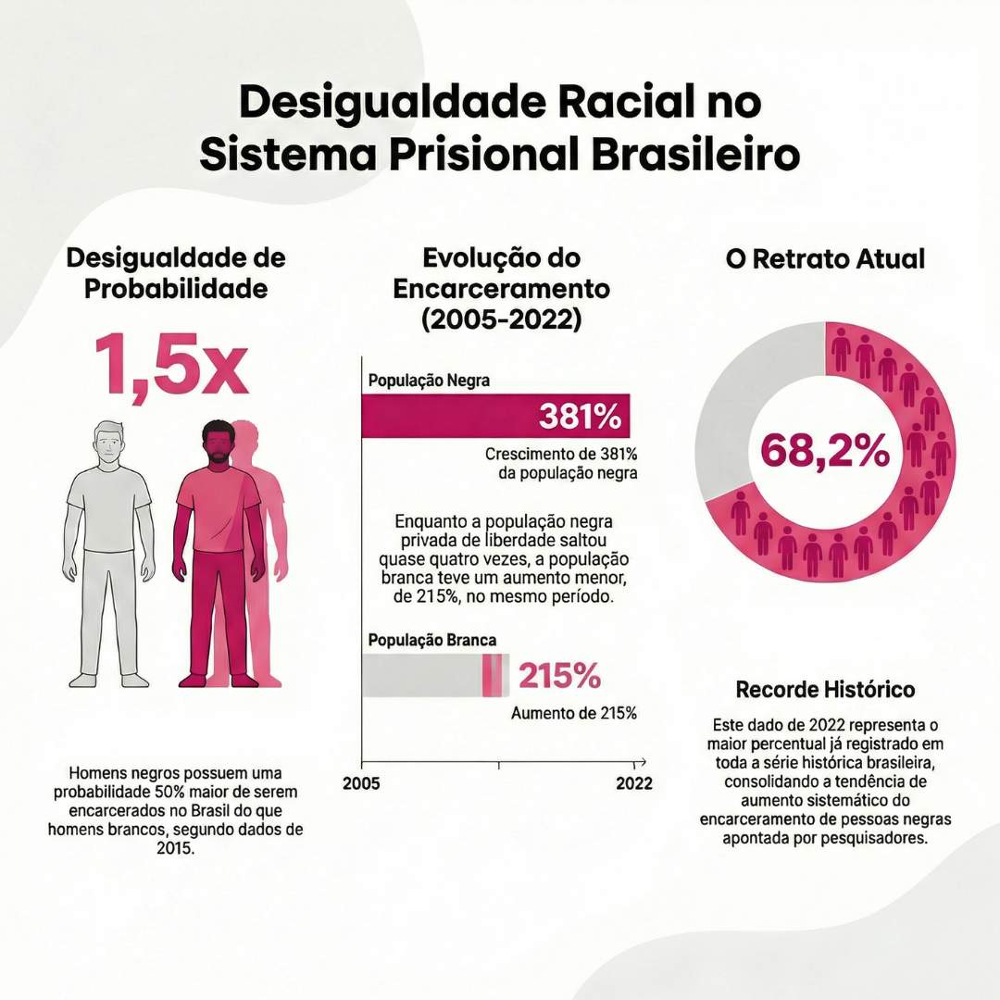
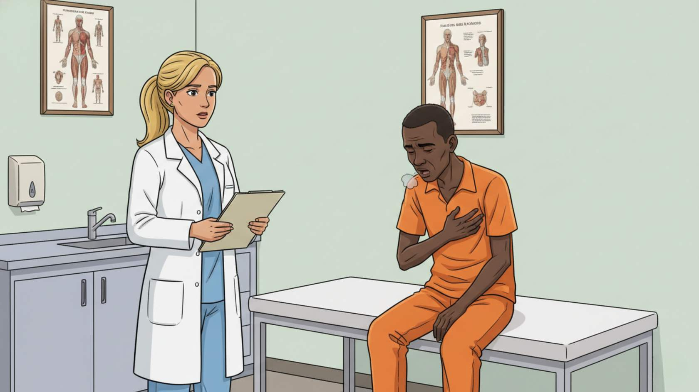
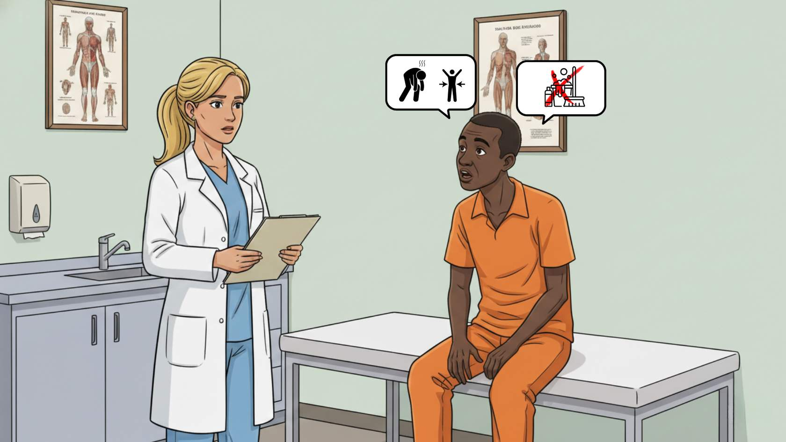
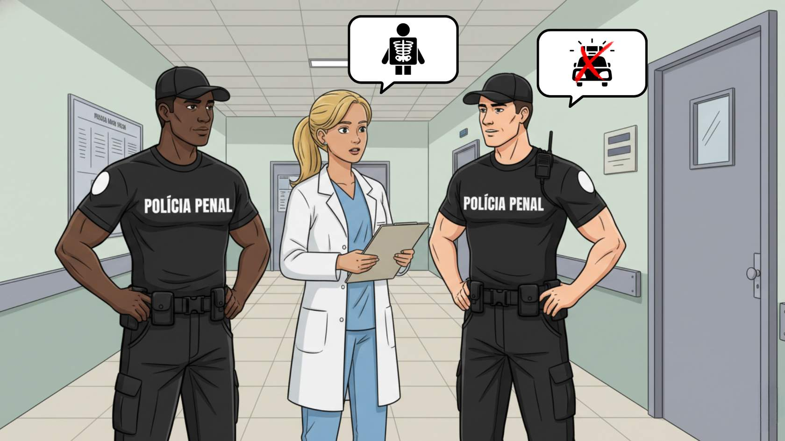
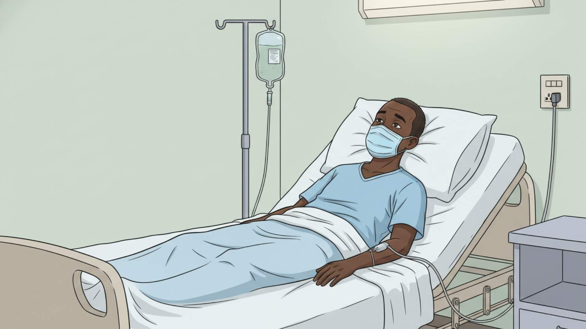
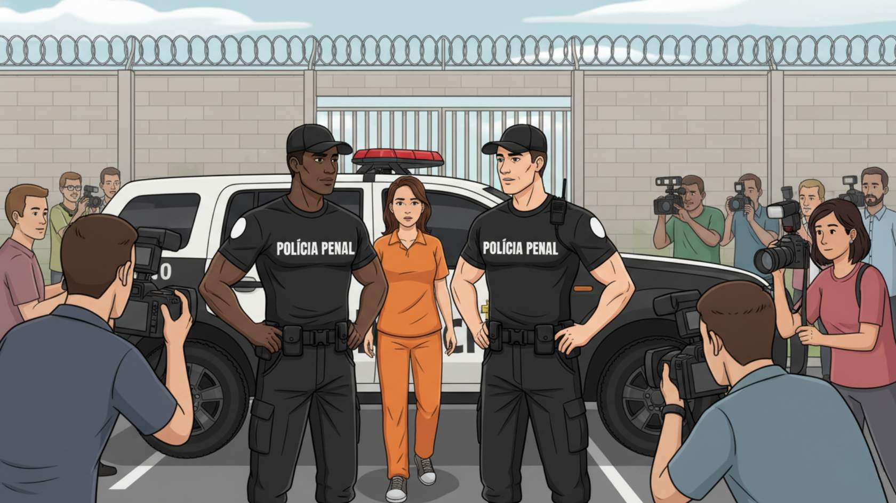
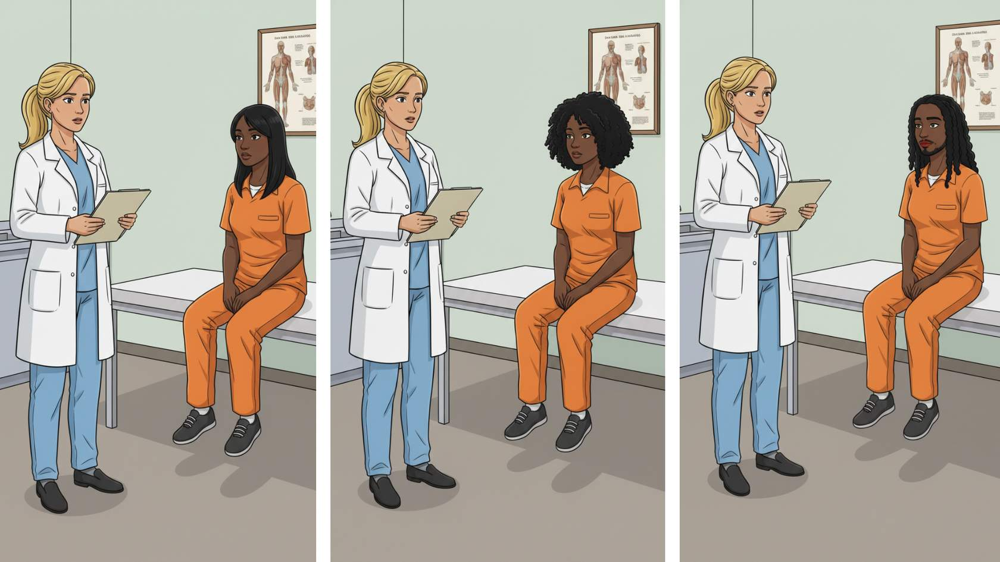
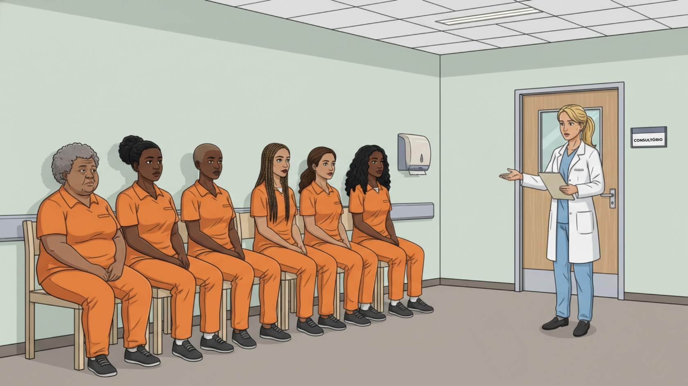

Apresentação da Unidade
Olá, estudante-trabalhador! Seja bem-vindo!
Nesta Unidade, abordaremos o racismo para além de atitudes individuais, compreendendo-o como uma estrutura que organiza a sociedade e permeia as instituições, especialmente o sistema de saúde e o sistema prisional.
Nosso ponto de partida é um dado revelador: a maioria da população prisional no Brasil é negra. Esse cenário evidencia que o aprisionamento em massa, a negação de direitos e as barreiras de acesso à saúde não são falhas isoladas, mas expressões do racismo estrutural e institucional.
Ao longo da Unidade, discutiremos conceitos e situações do cotidiano que demonstram os efeitos do racismo na saúde física, mental e espiritual da população negra privada de liberdade. Também apresentaremos as políticas públicas que orientam o enfrentamento do racismo e o cuidado às pessoas aprisionadas no Sistema Único de Saúde (SUS) (Brasil, 1990), especialmente a Política Nacional de Saúde Integral da População Negra (PNSIPN) (Brasil, 2017a) e a Política Nacional de Atenção Integral à Saúde das Pessoas Privadas de Liberdade no Sistema Prisional (PNAISP) (Brasil, 2014), destacando sua articulação no enfrentamento das desigualdades raciais.
Essa articulação implica o uso do quesito raça/cor nos registros em saúde, a formação permanente das equipes com foco no letramento racial, o acolhimento qualificado e a valorização da identidade e da ancestralidade negra como dimensões do cuidado. Nosso objetivo é ir além da teoria para provocar mudanças concretas nas práticas de escuta, acolhimento e cuidado, afirmando a dignidade e a humanidade de cada pessoa privada de liberdade.
Objetivos de Aprendizagem da Unidade
Compreender o racismo estrutural e institucional como determinantes sociais das desigualdades em saúde;
Identificar os efeitos do racismo na saúde física e mental da população negra privada de liberdade;
Reconhecer o racismo institucional como violação de direitos e barreira ao acesso integral à saúde no sistema prisional;
Conhecer a articulação entre as diretrizes da PNSIPN e da PNAISP;
Refletir sobre práticas de cuidado com enfoque antirracista, incluindo acolhimento qualificado, produção de dados com marcador racial e letramento racial das equipes;
Valorizar saberes, culturas e espiritualidades afro-brasileiras no cuidado em saúde.
Carga Horária de Estudo: 5 horas
4.1 Para começar: perfil da população privada de liberdade e letramento racial
Quando pensamos em pessoas presas, é importante considerarmos as imagens e representações que nos vêm à mente. Quem imaginamos estar preso? E quem costuma permanecer livre? Essas percepções, muitas vezes naturalizadas, refletem o modo como o racismo estrutura nossas formas de ver e compreender o mundo. Não se trata de reforçar preconceitos, mas de desenvolver um olhar crítico para entender como espaços como o estabelecimento penal são estruturados por marcadores de cor, classe e território.
O preconceito refere-se à formação de juízos ou opiniões sem base justa ou factual. Por exemplo, ao presumirmos que alguém é incapaz ou inadequado para determinada função por sua origem racial ou étnica, reforçamos uma atitude discriminatória que sustenta estigmas e legitima desigualdades históricas (Bento, 2003; Munanga, 2003).
Essa mesma lógica de hierarquização racial e social que sustenta o preconceito se reflete nas estruturas institucionais, produzindo efeitos concretos sobre os direitos que deveriam ser garantidos. Os dados oficiais mostram que a população negra é o principal alvo do aprisionamento no Brasil. O país tem a terceira maior população prisional do mundo (Walmsley, 2018), majoritariamente composta por pessoas pretas e pardas, jovens e de baixa escolaridade (Brasil, 2025). Esse padrão se repete entre homens, mulheres e pessoas LGBTIA+, evidenciando como os racismos estrutural e institucional conformam a atuação do sistema de justiça. Assim, o aprisionamento não é apenas uma punição, mas o resultado de desigualdades históricas que antecedem a privação de liberdade.
O letramento racial surge, pois, como um instrumento de conscientização e transformação social. Além de reconhecer a existência do racismo, busca desenvolver uma capacidade crítica e ativa nas pessoas para que elas enfrentem o racismo e compreendam seus efeitos nas relações interpessoais, interraciais, sociais e institucionais.
Para Ladson-Billings (2008), o letramento racial implica desvelar como a supremacia branca se articula de modo persistente nas diferentes esferas sociais, exigindo uma postura política e pedagógica de resistência. No campo da saúde, da justiça e da educação, o letramento racial é condição ética e formativa para romper com o racismo institucional e promover práticas voltadas à equidade e à dignidade das pessoas privadas de liberdade.
Para favorecer a compreensão e a aplicação prática desse conceito, apresentaremos a seguir alguns conceitos fundamentais que fornecem a base teórica para o letramento racial. A sistematização busca oferecer um panorama sintético das principais categorias que sustentam essa reflexão e suas respectivas definições teóricas. A proposta é que esses conceitos contribuam para o desenvolvimento de uma leitura crítica das desigualdades raciais, para a identificação das formas pelas quais o racismo se manifesta nas instituições e para o fortalecimento das estratégias pedagógicas e políticas de enfrentamento. Eles serão retomados ao longo desta Unidade.
Clique para interagir
Conjunto de práticas, valores e instituições que reproduzem, de forma sistêmica, a desigualdade racial, transversalizando as dimensões econômicas, políticas e culturais (Almeida, 2019);
Falha das instituições em prover serviços adequados e equitativos em razão da cor, cultura ou origem racial/étnica, perpetuando desigualdades (Brasil, 2017b);
Não existe do ponto de vista biológico, mas existe do ponto de vista social, sendo uma construção ideológica que se mantém viva por meio das relações de poder e das desigualdades que ela ajuda a justificar (Munanga, 2003);
Ferramenta que revela como marcadores sociais, como raça, gênero, classe, sexualidade e território, articulam-se para produzir formas específicas e contínuas de opressão e desigualdade. Mais que a soma de discriminações, evidencia como as estruturas de poder operam conjuntamente, naturalizando hierarquias e reproduzindo exclusões, inclusive nas políticas públicas (Crenshaw, 2002);
Posição social de privilégio racial associada à naturalização da hierarquia racial e à manutenção de estruturas de poder (Bento, 2022);
Capacidade crítica de identificar, compreender e enfrentar o racismo, reconhecendo privilégios e responsabilidades sociais no enfrentamento das desigualdades raciais (Ladson-Billings, 2008).
4.2 Racismo institucional no sistema prisional brasileiro
Antes de ingressar no sistema prisional, muitas pessoas já viviam em contextos marcados por múltiplas vulnerações: acesso precário à educação formal, à saúde, ao trabalho digno e à renda. O relatório Desigualdades Sociais por Cor ou Raça no Brasil (Instituto Brasileiro de Geografia e Estatística, 2022) demonstra que as pessoas pretas e pardas enfrentam maiores dificuldades no acesso a trabalho, renda, educação, saúde, moradia e segurança. Em 2022, o rendimento médio por hora dos trabalhadores brancos foi 61,4% superior ao de pessoas pretas e pardas. Esses dados revelam que o racismo estrutura as oportunidades e os resultados sociais, sustentando desigualdades que se reproduzem no sistema penal e prisional.
O aprisionamento, em muitos casos, é a primeira resposta institucional às trajetórias de negligência, pobreza e marginalização de famílias e comunidades inteiras. O Brasil figura entre os países com maior taxa de aprisionamento no mundo (Walmsley, 2018), apresentando taxas de reincidência que chegam a 21% no primeiro ano e quase 39% após cinco anos (Brasil, 2025), o que expõe a ineficácia do aprisionamento como política de reintegração social.

Fonte: elaboração da autora (2025).O racismo institucional, definido na Política Nacional de Saúde Integral da População Negra (Brasil, 2017a), refere-se às formas de racismo que se expressam no funcionamento cotidiano das instituições, como órgãos governamentais, instituições públicas, empresas, corporações e universidades. Ele se manifesta por práticas que colocam pessoas pertencentes a grupos raciais ou étnicos em condições desiguais no acesso aos direitos e aos benefícios produzidos pelas instituições e organizações. Essas desigualdades podem ser observadas, por exemplo, na demora, na insuficiência ou na ausência de efetivação de políticas públicas voltadas a determinados grupos sociais. Esse tipo de racismo se materializa por meio de atitudes e práticas como a discriminação racial, a reprodução de estereótipos, a omissão, o desrespeito, a desconfiança, a desvalorização e a desumanização de determinados grupos. Trata-se de um mecanismo estrutural que se manifesta nas rotinas e nos processos institucionais, independentemente da intenção individual dos profissionais. Assim, o racismo institucional não se restringe a atos explícitos, mas aparece também no despreparo das equipes, nas barreiras de acesso aos serviços e na naturalização das desigualdades, impactando e comprometendo de forma ampla os espaços sociais coletivos e as instâncias governamentais (Brasil, 2017a).
Esse processo coloca a população negra em desvantagem no acesso a direitos e agrava as disparidades de saúde existentes entre brancos e negros. Na saúde, o racismo institucional aparece na subnotificação do quesito raça/cor, nos maiores índices de morte materna entre mulheres negras, nos piores indicadores de populações quilombolas e na ausência de acolhimento culturalmente adequado. No sistema de justiça e segurança pública, ele se expressa nas desigualdades de acesso e tratamento nos estabelecimentos penais, em que políticas de saúde e educação, embora previstas, são frequentemente negligenciadas.
A carência de profissionais, a precariedade estrutural e a superlotação agravam essa desigualdade, assim como a ausência de exames preventivos e a falta de registro da raça/cor nos prontuários, o que invisibiliza os efeitos do racismo na saúde. Dados do Mapa do Encarceramento evidenciam de forma clara a seletividade racial do sistema penal brasileiro. Homens negros têm 1,5 vez mais chances de serem aprisionados, quando comparados a homens brancos (Brasil, 2015). Entre 2005 e 2022, a população negra privada de liberdade cresceu 381%, enquanto a população branca aumentou 215%, o que resultou na redução proporcional desta última no conjunto da população carcerária (Brandão; Lagreca, 2023). Em 2022, 68,2% da população privada de liberdade no Brasil era composta por pessoas negras, representando o maior percentual já registrado na série histórica, evidenciando a tendência apontada pelos autores (Brandão; Lagreca, 2023).

Fonte: elaboração da autora (2025).Compreender os estabelecimentos prisionais como expressão das desigualdades estruturais do país é fundamental para enfrentar o racismo institucional. A ausência de pessoas negras nos espaços de decisão contrasta com sua sobrerrepresentação nos estabelecimentos penais e em outros territórios de exclusão. Enfrentar essa realidade exige um projeto de justiça racial que ultrapasse o campo penal e se articule com políticas de educação, saúde, trabalho e cidadania.
4.3 Racismo, racismo estrutural e privação de liberdade
Quando falamos sobre racismo, é comum que muitas pessoas pensem apenas em atos individuais de preconceito. No entanto, o racismo estrutural e o racismo institucional nos mostram que ele está nas regras da sociedade, nas leis, nas instituições e nas práticas sociais que colocam a população negra em posição de constante desvantagem. Essa desigualdade é produzida por um sistema que organiza quem terá mais oportunidades de viver com dignidade e quem terá seus direitos negados.
O racismo pode ser compreendido como um sistema de poder e dominação que estabelece uma hierarquia entre grupos raciais, sustentando a supremacia branca e empurrando pessoas negras e indígenas a posições de subordinação (Munanga, 2003). Sua ação se manifesta de forma estrutural, cultural e institucional, moldando relações sociais e produzindo desigualdades persistentes.
O racismo estrutural (conceito apresentado anteriormente) se inscreve no próprio modo de organização da sociedade, perpassando dimensões sociais, políticas, jurídicas e econômicas (Almeida, 2019). No espaço prisional, ele se manifesta de forma particularmente brutal. A seletividade racial penal, expressa, por exemplo, no aprisionamento majoritariamente de pessoas negras, evidencia que o sistema de justiça funciona de modo desigual para pessoas brancas e pessoas negras, criminalizando mais intensamente determinadas populações.
O racismo institucional aparece quando as unidades de saúde não oferecem exames preventivos a mulheres negras privadas de liberdade ou quando o quesito raça/cor não é registrado em prontuários, tornando invisíveis os efeitos do racismo nos indicadores de saúde. Na prática, essa dinâmica se revela de diferentes maneiras.
A seguir, são apresentados alguns casos que ilustram o racismo estrutural e que podem ocorrer em muitos estabelecimentos penais. São situações vivenciadas por uma médica de família e comunidade em uma instituição penal. Os nomes e alguns detalhes foram alterados para preservar a identidade das pessoas atendidas, mas as experiências exemplificam desafios concretos enfrentados no cotidiano das equipes de Atenção Primária Prisional.

Clique na imagem para aumentarAtuando por mais de 15 anos na mesma unidade básica de saúde prisional, logo quando chegou, atendeu um homem cis negro, 38 anos, heterossexual, privado de liberdade havia aproximadamente seis anos, que sabia ler apenas o próprio nome e chamado aqui de José Carlos. Era casado e tinha dois filhos. Desde que havia chegado àquela instituição penal, nunca tinha realizado exames e só havia registro de atendimentos de urgência em seu prontuário. Não havia registro de consultas médicas regulares realizadas.
José Carlos chegou à consulta relatando perda de peso progressiva, tosse com sangue e cansaço que persistia havia pelo menos quatro meses. Procurou atendimento na enfermaria várias vezes e, nas primeiras consultas, suas queixas foram desvalorizadas: “isso é frescura - deve ser porque não quer trabalhar na faxina”, relatou ter ouvido da equipe de saúde, afirmação ratificada por uma policial penal que o acompanhava. Os policiais penais já estavam reclamando da frequência com que José Carlos solicitava atendimento.

Clique na imagem para aumentar
Clique na imagem para aumentarApós ouvir os policiais penais, a médica solicitou exame de raio-X, que precisaria ser feito fora do estabelecimento penal e não foi realizado por “falta de escolta”. Além disso, houve perda do material coletado para exame de escarro em duas ocasiões por falta de transporte até o laboratório.

Clique na imagem para aumentarQuando finalmente José Carlos conseguiu ser levado a um hospital, recebeu diagnóstico de tuberculose avançada, com suspeita de câncer de pulmão. O atraso no diagnóstico e as barreiras institucionais agravaram seu quadro clínico, ampliando seu sofrimento e reduzindo suas chances de tratamento precoce e eficaz. José Carlos ainda relatou que, em sua cela superlotada, havia pelo menos três pessoas com sintomas semelhantes.
Você percebeu que o caso de José Carlos evidencia como o racismo estrutural pode ser operado no cenário prisional?
O fato de ser um homem negro, com baixa escolaridade, pobre e privado de liberdade não é uma coincidência individual, mas resultado de processos históricos e sociais que tornam a população negra sobrerrepresentada nos estabelecimentos penais e mais exposta a determinantes que favorecem a ocorrência de doenças graves, como tuberculose e câncer.
O aprisionamento em massa de pessoas negras é expressão do racismo estrutural que organiza a sociedade brasileira, em que a criminalização de pessoas negras, da pobreza e da raça/cor - isoladas ou combinadas - se traduz em exclusão, negação de humanidade e maior vulneração à morte precoce.
O racismo institucional aparece na desvalorização das queixas de José Carlos, interpretadas como “frescura” ou tentativa de evitar o trabalho, revelando estereótipos raciais e sociais que naturalizam o sofrimento de pessoas negras privadas de liberdade. A interferência dos policiais penais na conduta médica mostra como as instituições de segurança têm primazia sobre a saúde, reforçando a seletividade penal-racial. A justificativa recorrente de “falta de escolta” para a realização de exames expõe barreiras institucionais que negam o direito ao diagnóstico e ao tratamento oportuno.
Assim, o caso de José Carlos ilustra como o racismo estrutural (que concentra a população negra nos estabelecimentos penais e em condições de vulneração) e o racismo institucional (que nega ou atrasa o cuidado em virtude de estigmas e barreiras burocráticas) se articulam para produzir a invisibilidade e o agravamento de doenças durante a privação de liberdade. O resultado é a perpetuação da lógica de desumanização, em que a saúde e a vida de pessoas negras privadas de liberdade têm menor valor social.
4.4 Branquitude e interseccionalidades
Ao observarmos a população privada de liberdade feminina brasileira, chama atenção a predominância de mulheres jovens, negras e com baixa escolaridade, realidade que evidencia como raça, gênero e classe se entrelaçam na produção das desigualdades que marcam os estabelecimentos penais (Brasil, 2025; Santos, 2020). Dados também apontam para a presença de pessoas LGBTIA+ (Brasil, 2020), além de idosos, gestantes, lactentes e até crianças que vivem com suas mães em estabelecimentos penais (Brasil, 2025), revelando a diversidade de pessoas que são afetadas por esse sistema.
Esse cenário nos convoca a ampliar o olhar e reconhecer que o universo prisional é formado por diferentes grupos: pessoas privadas de liberdade, seus familiares e amigos, trabalhadores penitenciários, homens, mulheres, jovens, adultos, idosos, pessoas com deficiência, migrantes, entre outros. Todos possuem direitos garantidos legalmente, ainda que, na prática, o acesso a esses direitos seja profundamente desigual.
É nesse ponto que conceitos como branquitude e interseccionalidade tornam-se fundamentais para a nossa análise: enquanto a branquitude ajuda a compreender os privilégios sociais, econômicos e simbólicos que acompanham as pessoas brancas mesmo em contextos de vulneração, a interseccionalidade permite identificar como diferentes marcadores sociais (como raça, gênero, classe, sexualidade, território, idade, deficiência, entre outros) se sobrepõem, criando formas complexas de opressão e exclusão no sistema prisional.
Para melhor compreendermos a articulação entre branquitude e interseccionalidade, vamos apresentar outro caso vivenciado pela mesma médica de família que demonstra uma situação que também pode ocorrer no sistema prisional de nosso país.

Clique na imagem para aumentarA médica acompanhou o caso de Katiane, mulher cis branca, 45 anos, de classe média e escolarizada, que havia sido presa e aguardava julgamento por homicídio. Seu ingresso no estabelecimento penal causou grande comoção: a imprensa produzia matérias diárias sobre sua trajetória; familiares e amigos organizavam campanhas públicas em sua defesa; e representantes de diferentes órgãos expressavam preocupação com as condições insalubres do estabelecimento penal, com a sua saúde e com a sua permanência naquele espaço.

Clique na imagem para aumentarPorém, a médica observou que, nos atendimentos cotidianos, a maioria das mulheres que eram encontradas – Lívias, Lygias, Andréias, Renatas, Luisas, Jarissas, Anas, Lidianes, Mirelas (nomes fictícios) – cis, trans, lésbicas, bissexuais, assexuadas, travestis – eram mulheres negras, com baixa escolaridade e pobres, cumprindo pena por delitos reconhecidos como de menor potencial ofensivo. Não se trata de escalonar crimes, mas, diferentemente do que é comumente divulgado, muitas vezes em outros casos semelhantes ao de Katiane, a presença de mulheres não brancas no estabelecimento penal não desperta qualquer comoção pública. Pelo contrário, a situação parece ser tratada como um destino esperado, naturalizado pelo racismo estrutural que organiza as instituições.

Clique na imagem para aumentarNas consultas dessas mulheres negras, tornava-se evidente o peso das marcas que carregavam: eram vistas não apenas como “criminosas”, mas como “merecedoras” da privação de liberdade, como se estivessem em um local considerado adequado por serem negras e pobres. Essa sobreposição de marcadores sociais de diferença e desigualdade - raça, gênero e classe - as colocava em condição de múltipla vulnerabilidade, em que a dor, as demandas de saúde e até mesmo o direito à dignidade eram facilmente negligenciados.
Você consegue vislumbrar como a interseccionalidade ajuda a compreender como esses fatores se entrelaçam, intensificando a exclusão e tornando essas mulheres alvo de descaso institucional?
Assim, ao contrastar essas experiências com outras tantas, percebemos como a articulação entre branquitude e interseccionalidade revela a lógica da hierarquia racial que organiza o sistema prisional brasileiro: a mesma condição de privação de liberdade é vivida e percebida de maneiras radicalmente distintas, dependendo da posição ocupada pelas pessoas nas hierarquias sociorraciais.
4.5 Na prática: o cuidado de pessoas privadas de liberdade com enfoque antirracista
O cuidado em saúde no sistema prisional exige mais do que competência técnica: requer escuta qualificada, sensibilidade e compromisso ético com a equidade racial. Ser antirracista, nesse contexto, é reconhecer as desigualdades históricas que atingem a população negra e transformar, de forma consciente, as práticas cotidianas de cuidado.
Isso implica questionar permanentemente nossas condutas: escutamos todas as pessoas com a mesma atenção? Reconhecemos e validamos as experiências de racismo? Registramos corretamente o quesito raça/cor? Discutimos o racismo nas reuniões de equipe? Buscamos formação em letramento racial?
As boas práticas antirracistas orientam ações concretas no processo de trabalho, como o acolhimento respeitoso e sem estigmas, o registro sistemático do quesito raça/cor, a formação permanente das equipes, o reconhecimento das dimensões culturais e espirituais afro-brasileiras no cuidado, a articulação intersetorial com a Defensoria Pública, a Assistência Social, a Educação e os movimentos sociais negros, além de uma postura ativa diante de falas e práticas racistas no cotidiano institucional.
Essa perspectiva também se constrói na micropolítica do trabalho, mas pode ser enfrentada com ações que contribuem para a mudança dessa realidade. Podemos ilustrar isso com a iniciativa de alguns estabelecimentos penais em que as eAPP incluíram o racismo institucional como tema permanente nas reuniões mensais, para que fossem discutidas situações concretas do cotidiano. Essa prática é um exemplo de fortalecimento do letramento racial e de produção de mudanças reais nos fluxos de atendimento e nos registros.
Cuidar com justiça racial é reconhecer que o racismo adoece, mas que o cuidado também pode reparar, fortalecer e reorganizar vidas. Na privação de liberdade, o enfrentamento do racismo começa no gesto, na escuta e na decisão cotidiana de não ser conivente com a desigualdade.
4.6 Letalidade prisional, racismo estrutural e políticas de saúde
Os dados do Conselho Nacional de Justiça (2023) mostram que o aprisionamento aprofunda o adoecimento e a mortalidade nos estabelecimentos penais e prolonga essas vulnerações após a liberdade, evidenciando a relação direta entre privação de liberdade, sofrimento e morte precoce. Esse cenário reforça a necessidade de políticas públicas que reconheçam o racismo como determinante social da saúde, articulando a PNSIPN e a PNAISP em ações transversais e intersetoriais capazes de enfrentar a seletividade penal e a desigualdade racial.
No contexto de privação de liberdade, essa articulação se materializa no registro obrigatório do quesito raça/cor, na formação permanente das equipes com foco em letramento racial, no acolhimento qualificado e no fortalecimento da identidade, da espiritualidade e da ancestralidade das pessoas negras privadas de liberdade. Mais do que cumprir protocolos, trata-se de afirmar a dignidade e o direito à saúde de populações historicamente invisibilizadas e vulneradas.
4.7 Saberes e espiritualidades afro-brasileiras no cuidado: uma breve abordagem
As pessoas privadas de liberdade têm direito à liberdade religiosa e à assistência socioespiritual enquanto cumprem pena privativa de liberdade (Brasil, 2024). O cuidado em saúde não se limita à ausência de doença: envolve corpo, mente, território e ancestralidade. Nas comunidades negras (ou afro-brasileiras), a espiritualidade sempre foi um espaço de cuidado, cura, resistência e reconstrução da dignidade. Nos estabelecimentos penais, reconhecer e valorizar as espiritualidades de matriz africana, como o Candomblé, a Umbanda e outras expressões do sagrado, é também um ato político e ético de reparação.
Práticas como o respeito aos símbolos e às crenças das pessoas negras privadas de liberdade, a escuta das lideranças religiosas, a possibilidade de rituais e celebrações e o diálogo com as culturas de origem fortalecem a dimensão subjetiva e comunitária do cuidado. Essas práticas ampliam o sentido de pertencimento, promovem saúde mental e espiritual e reafirmam a humanidade de pessoas historicamente desumanizadas pelo racismo e pela privação de liberdade.
Valorizar saberes e espiritualidades afro-brasileiras é reconhecer que o cuidado comprometido com a justiça racial também é ancestral, cultural e espiritual. Trata-se, sobretudo, de um cuidado que repara, dignifica e devolve à pessoa privada de liberdade o direito de existir com identidade e fé.
Além disso, o enfrentamento do racismo no estabelecimento penal exige estratégias intersetoriais, que articulem saúde, justiça, educação, assistência social e sociedade civil. Essas ações conjuntas permitem avançar no combate à seletividade racial penal e às desigualdades que estruturam o sistema prisional, criando respostas mais amplas e transformadoras. Por fim, o enfrentamento do racismo no SUS e no estabelecimento penal não é apenas um compromisso ético-político, mas também uma exigência para a efetivação da equidade em saúde.
Encerramento da Unidade
O sistema prisional brasileiro reflete desigualdades históricas que marcam profundamente a vida das pessoas privadas de liberdade. Nesse cenário, o papel das equipes de saúde é essencial não apenas para reorganizar trajetórias individuais, mas para afirmar direitos e promover transformação social.
Reconhecer a privação de liberdade como determinante de saúde, adoecimento e morte implica compreender como os racismos estrutural e institucional moldam o cotidiano prisional, negando direitos, atrasando diagnósticos e naturalizando o sofrimento de pessoas negras, sobretudo jovens, pobres e periféricas.
A atuação dos profissionais de saúde nos estabelecimentos prisionais deve ser orientada pelos princípios de integralidade, intersetorialidade e justiça racial, incorporando práticas como a escuta qualificada, a valorização da identidade e da espiritualidade, o registro do quesito raça/cor e o fortalecimento do letramento racial. Essas ações qualificam a assistência, permitem identificar desigualdades e orientam estratégias de enfrentamento do racismo institucional.
É igualmente fundamental reconhecer a interseccionalidade para compreender como raça, gênero, classe, sexualidade, território e deficiência se articulam na produção de vulnerações, assim como discutir a branquitude para evidenciar privilégios que moldam percepções e respostas sociais à privação de liberdade. Promover o cuidado das pessoas aprisionadas é, mais do que tratar doenças, é reafirmar dignidade e direito à vida, reconhecendo que não há saúde possível sem justiça racial e social. Cuidar é romper silêncios e afirmar a vida em que o racismo insiste em negá-la.
Podcast
Após estudar esse módulo, você pode revisar o conteúdo escutando o nosso podcast. É um bate-papo informal com os principais pontos do conteúdo estudado.
Ver transcriçãoParabéns por concluir essa unidade! Clique no botão "retornar" no canto superior esquerdo para continuar os seus estudos.
Referências
ALMEIDA, S. Racismo estrutural. São Paulo: Pólen, 2019.
BENTO, C. O pacto da branquitude. São Paulo: Companhia das Letras, 2022.
BENTO, M. A. S. Branqueamento e branquitude no Brasil. In: CARONE, I.; BENTO, M. A. S.; PIZA, E. (org.). Psicologia social do racismo: estudos sobre branquitude e branqueamento no Brasil. 2. ed. Petrópolis: Vozes, 2003. p. 1-30.
BRANDÃO, J.; LAGRECA, A. O delito de ser negro – atravessamentos do racismo estrutural no sistema prisional brasileiro. In: FÓRUM BRASILEIRO DE SEGURANÇA PÚBLICA. 17º Anuário Brasileiro de Segurança Pública. São Paulo: Fórum Brasileiro de Segurança Pública, 2023. p. 308-319. Disponível em: https://forumseguranca.org.br/wp-content/uploads/2023/07/anuario-2023.pdf . Acesso em: 9 jan. 2026.
BRASIL. Ministério da Justiça e Segurança Pública. Departamento Penitenciário Nacional. Levantamento Nacional de Informações Penitenciárias – INFOPEN. Brasília: DEPEN, 2025. Disponível em: https://www.gov.br/senappen/pt-br/servicos/sisdepen/relatorios/relatorios-de-informacoes-penitenciarias/relatorio-do-1o-semestre-de-2025.pdf . Acesso em: 20 jan. 2026.
BRASIL. Conselho Nacional de Política Criminal e Penitenciária (CNPCP). Resolução nº 34, de 24 de abril de 2024. Define diretrizes e recomendações referentes à assistência socio-espiritual e à liberdade religiosa das pessoas privadas de liberdade. Diário Oficial da União, Brasília, DF, 29 abr. 2024. Disponível em: https://www.in.gov.br/web/dou/-/resolucao-n-34-de-24-de-abril-de-2024-556521006 . Acesso em: 10 dez. 2025.
BRASIL. Mais de 10 mil presos se autodeclaram LGBTI no Brasil. gov.br, 13 mar. 2020. Disponível em: https://www.gov.br/senappen/pt-br/assuntos/noticias/mais-de-10-mil-presas-se-autodeclaram-lgbti-no-brasil . Acesso em: 21 jan. 2026.
BRASIL. Ministério da Saúde. Política Nacional de Saúde Integral da População Negra: uma política para o SUS. 3. ed. Brasília: Ministério da Saúde, 2017a. Disponível em: https://bvsms.saude.gov.br/bvs/publicacoes/politica_nacional_saude_populacao_negra_3d.pdf . Acesso em: 24 jan. 2026.
BRASIL. Ministério da Saúde. Portaria nº 344, de 1º de fevereiro de 2017. Dispõe sobre o preenchimento do quesito raça/cor nos formulários dos sistemas de informação em saúde. Diário Oficial da União, Brasília, DF, 2 fev. 2017b. Disponível em: https://bvsms.saude.gov.br/bvs/saudelegis/gm/2017/prt0344_01_02_2017.html . Acesso em: 10 dez. 2025.
BRASIL. Mapa do encarceramento: os jovens do Brasil. Brasília: Presidência da República, 2015. Disponível em: https://bibliotecadigital.mdh.gov.br/jspui/bitstream/192/89/1/SNJ_mapa_encarceramento_2015.pdf . Acesso em: 24 jan. 2026.
BRASIL. Portaria Interministerial nº 1, de 2 de janeiro de 2014. Institui a Política Nacional de Atenção Integral à Saúde das Pessoas Privadas de Liberdade no Sistema Prisional (PNAISP) no âmbito do Sistema Único de Saúde (SUS). Diário Oficial da União, Brasília, DF, 3 jan. 2014. Disponível em: https://bvsms.saude.gov.br/bvs/saudelegis/gm/2014/pri0001_02_01_2014.html . Acesso em: 9 jan. 2026.
BRASIL. Lei nº 8.080, de 19 de setembro de 1990. Dispõe sobre as condições para a promoção, proteção e recuperação da saúde, a organização e o funcionamento dos serviços correspondentes e dá outras providências. Diário Oficial da União, Brasília, DF, 20 set. 1990. Disponível em: https://www.planalto.gov.br/ccivil_03/leis/l8080.htm . Acesso em: 9 jan. 2026.
CONSELHO NACIONAL DE JUSTIÇA. Letalidade prisional: uma questão de justiça e de saúde pública: sumário executivo. 5. ed. Brasília: CNJ, 2023.
CRENSHAW, K. W. Documento para o encontro de especialistas em aspectos da discriminação racial relativos ao gênero. Revista Estudos Feministas, v. 10, n. 1, p. 171-188, 2002. Disponível em: https://www.scielo.br/j/ref/a/mbTpP4SFXPnJZ397j8fSBQQ/?lang=pt . Acesso em: 21 jan. 2026.
INSTITUTO BRASILEIRO DE GEOGRAFIA E ESTATÍSTICA. Desigualdades sociais por cor ou raça no Brasil. Rio de Janeiro: IBGE, 2022. Disponível em: https://biblioteca.ibge.gov.br/visualizacao/livros/liv101972_informativo.pdf . Acesso em: 20 jan. 2026.
LADSON-BILLINGS, G. Critical Race Theory: Perspectives on Social Studies. In: LEVSTIK, L. S.; TYSON, C. A. (org.). Handbook of Research in Social Studies Education. Nova Iorque: Routledge, 2008. p. 127-136.
MUNANGA, K. Racismo, preconceito e discriminação: algumas definições. In: FUNDAÇÃO CULTURAL PALMARES; SECRETARIA DE EDUCAÇÃO CONTINUADA, ALFABETIZAÇÃO E DIVERSIDADE; UNESCO. Educação anti-racista: caminhos abertos pela Lei Federal nº 10.639/03. Brasília: Ministério da Educação/UNESCO, 2003. p. 15-34.
SANTOS, A. B. S. Mulheres encarceradas: considerações sobre gênero, feminismos e raça em um cenário específico de atenção à saúde. Revista Feminismos, v. 8, n. 1, p. 109-123, 2020. Disponível em: https://periodicos.ufba.br/index.php/feminismos/article/view/42444 . Acesso em: 9 jan. 2026.
WALMSLEY, R. World Prison Population List. 12. ed. Londres: Institute for Crime & Justice Policy Research, 2018.
Minicurrículo da Autora
Médica formada pela Universidade Federal de Ciências da Saúde de Porto Alegre. Especialista
em
Medicina de Família e
Comunidade pela Sociedade Brasileira de Medicina de Família e Comunidade (SBMFC). Mestra e
Doutoranda em Saúde Coletiva.
Conselheira do Conselho Nacional de Política Criminal e Penitenciária (CNPCP) de 2012 a
2014.
Atuou na Penitenciária
Lemos Brito, na Bahia, de 2007 a 2023. Docente do Departamento de Saúde da Universidade
Estadual
de Feira de Santana
(UEFS) e Pesquisadora do Núcleo Interdisciplinar de Estudos em Desigualdades em Saúde
(NUDES) da
UEFS. Docente e
Preceptora do Programa de Residência em Medicina de Família e Comunidade da Escola Bahiana
de
Medicina e Saúde Pública.
Compõe a Equipe de Avaliação e Acompanhamento das Medidas Terapêuticas Aplicáveis à Pessoa
com
Transtorno Mental em
Conflito com a Lei (EAP-Desinst) na Secretaria de Saúde do Estado da Bahia. Idealizadora da
ação
Saúde e Cultura
Intramuros nas prisões baianas. Autora dos livros: Olhar por entre grades, vidas em
poemas
(2020),Tempo em mim (2023) e
Teorias e Sentidos em uma Prática Abolicionista (2025). Codiretora do documentário
Genocídio e Movimentos, lançado pela
produtora Couro de Rato (2021).
Lattes: http://lattes.cnpq.br/4323743557774388